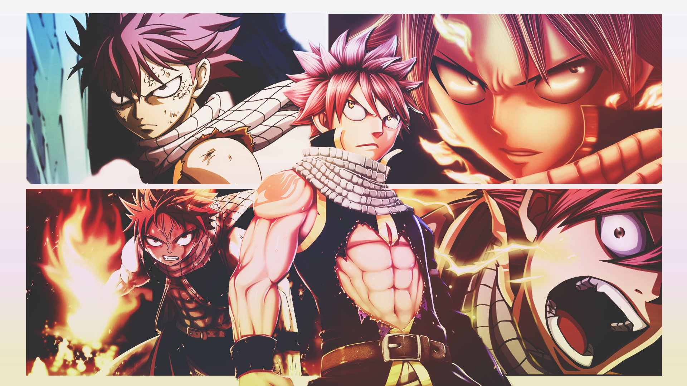

About Natsu
Natsu is a badass. He's a dragon slayer mage for the legendary Fairy Tail guild. He uses really awesome fire attacks and is super strong.
Natsu hype imagery
Natus's Characteristics
- He's got pink hair
- He's super friendly until you piss him off by hurting his friends.
- He's so strong!!
Natsu's Friends
Natsu has awesome friends. His best friend is Lucy and Happy. But he's also super good friends Gray and Erza. Click on the links below to read more about them: